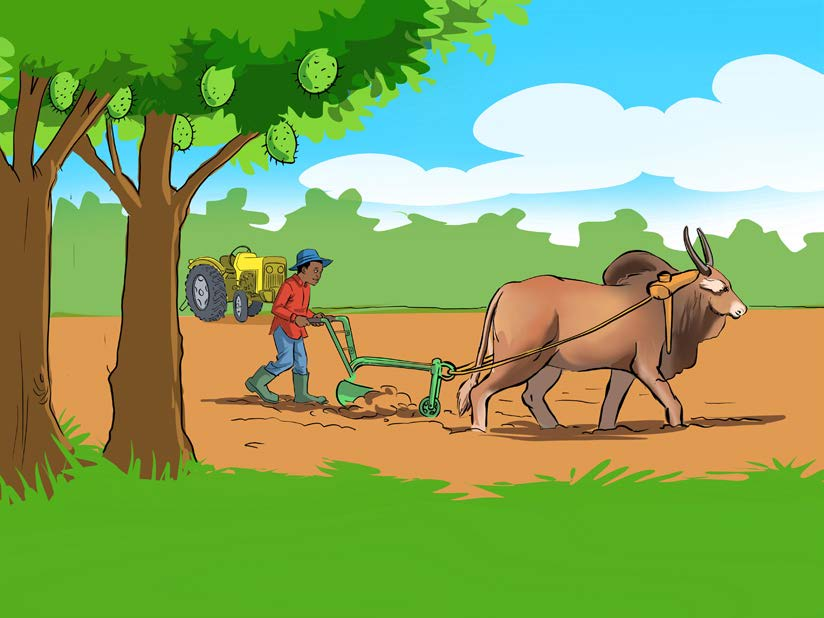

Soma kwa sauti/ kwa kutumia lugha ya alama habari hii, kisha fanya zoezi linalofuata.
Bustani ya Besta

Bustani ya Besta ni kubwa sana. Mimea imestawi vyema. Amepanda miti ya stafeli, machungwa na maembe. Pia, amepanda mboga kama spinachi, mchicha na matembele. Vilevile, amepanda mahindi, maharage na njegere. Besta anaitunza vyema bustani yake. Huandaa bustani kabla ya kupanda mazao. Hulima bustani yote kwa kutumia plau inayovutwa na maksai. Wakati mwingine hulima kwa trekta la mkono. Pia, huandaa matuta na kuweka mbolea ya samadi. Akimaliza hupanda mazao na kuyatunza vizuri.
68